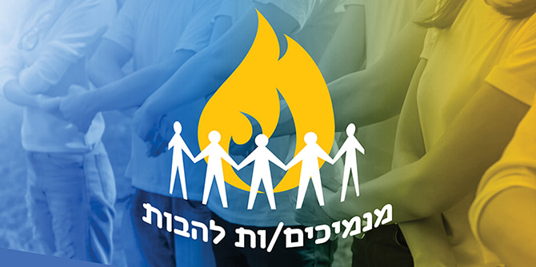

אלה לא הימים
לתכניות גדולות
עוד נסתרות הבשורות
החוסות תחת כנפי העץ
חלונות הזמן שלי מרווחים
זו שעתם היפה
של הדברים הקטנים.
(מיכאל זץ)
תחילת אוקטובר 2020 – עמודי החדשות מדווחים שהמפגינים מבלפור מפיצים מחלות, שהחרדים אשמים בתחלואה הגוברת, ושהערבים אינם מצייתים להנחיות. המרחב הציבורי גדוש בתחושה של ניכור – הן בשל הסגרים והן בשל המגפה שתקפה אותנו. בני הנוער נמצאים ללא כל מסגרת חינוכית סדורה ממרס 2020 – פורמלית או בלתי פורמלית. הפעילות במרחב הווירטואלי חושפת את בני הנוער להתנהגויות סיכוניות ומעצימה את תחושת הניכור והבדידות שעליה הם מדווחים, כפי שמשתקף מנתוני דוח מצב הנוער שיצא בחסות משרד העבודה, הרווחה והשירותים החברתיים. הדוח מצביע על עלייה של 2.5% בתחושת הבדידות ברבעון האחרון של 2020 ועלייה של 4.5% בתחושת הדיכאון והחרדה.
לנוכח מצב מדאיג זה התכנסו בוגרי תוכנית מנדל למנהיגות נוער, המובילים את תנועות הנוער וארגוני הנוער בישראל, כדי לארגן מעשה חברתי בתנועות ובארגונים שבהם הם פועלים. הבוגרים הזמינו את חניכי וחניכות התנועות והארגונים לחשוב יחד על צורות שונות של שיח אחר: שיח מכבד שלוקח אחריות על המציאות ועל עתידה של המדינה. מטרת המפגש הייתה לשמש פלטפורמה שבה יוכלו בני נוער להיפגש עם שונים מהם ולסייע בהפחתת תחושת הניכור הכללית בין המגזרים השונים בארץ.

ביום הסולידריות הבינלאומי נפגשו לערב מקוון שכותרתו "מנמיכים את הלהבות" כ-300 בני נוער ובנות נוער מהמגזרים השונים בישראל: דתיים, חילונים, ערבים ויהודים, בהובלת בוגרי התוכנית. הערב היה דו-לשוני, והמשתתפים שיתפו בעולמם ובחוויות שהם חווים בתקופה מאתגרת זו, וניסחו יחד את הצעותיהם לקיום שיח מכבד יותר. במהלך הערב נשאו דברים גם שר החינוך לשעבר, הרב שי פירון, ומנכ"ל בית הנשיא הראל טובי. השניים בירכו את הנערים והנערות על יוזמתם החשובה ועודדו אותם להמשיך לפעול למען החברה בישראל.
בסיכום הערב המוצלח, ומעבר לחוויה של הנערים והנערות שהשתתפו בו, האדוות שנוצרו באירוע מחזקות את רשת בוגרי התוכנית המשפיעים על סדר היום החינוכי בישראל, ומאפשרות לבוגרים לחלום, ליצור ולשנות. הנמכת הלהבות היא רק התחלת השינוי.
{kind=link}